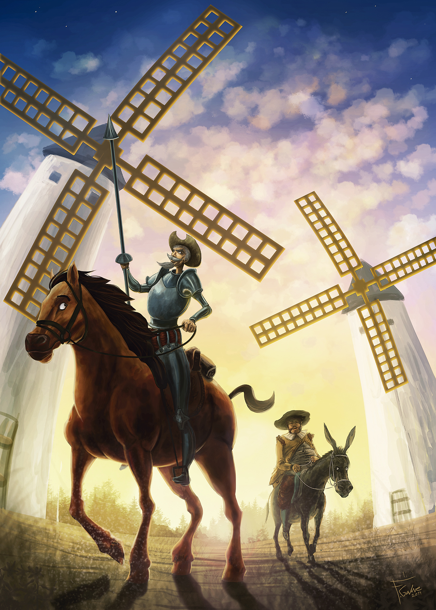

This is a paragraph.
Don Quijote de la Mancha, cuyo título original es El ingenioso hidalgo don Quijote de La Mancha, es una novela del subgénero literario burlesco. Fue escrita por el español Miguel de Cervantes Saavedra (1547-1616) y publicada en dos entregas: El primer tomo en el año 1605 y el segundo en 1615.
La novela relata la historia de Alonso Quijano, un hidalgo que enloquece a causa de la lectura de libros de caballerías, y un día decide armarse caballero y salir en busca de aventuras junto a su escudero, Sancho Panza.
En la siguiene pagina web, podra ver informacion sobre la obra, como los personajes mas importantes y las localizaciones en la vida real.